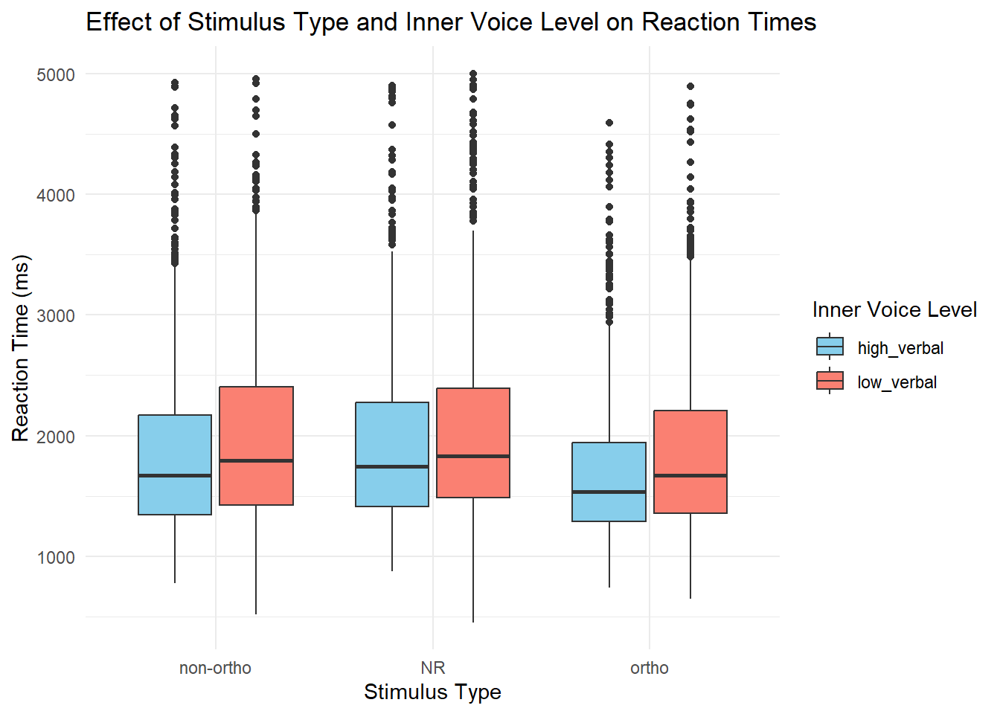
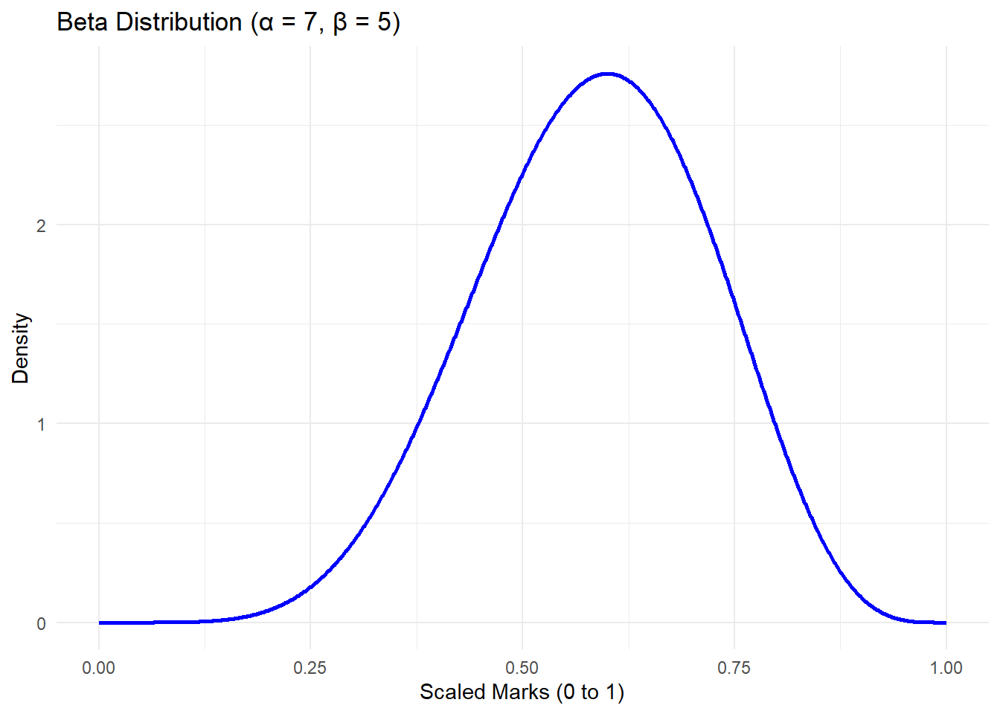
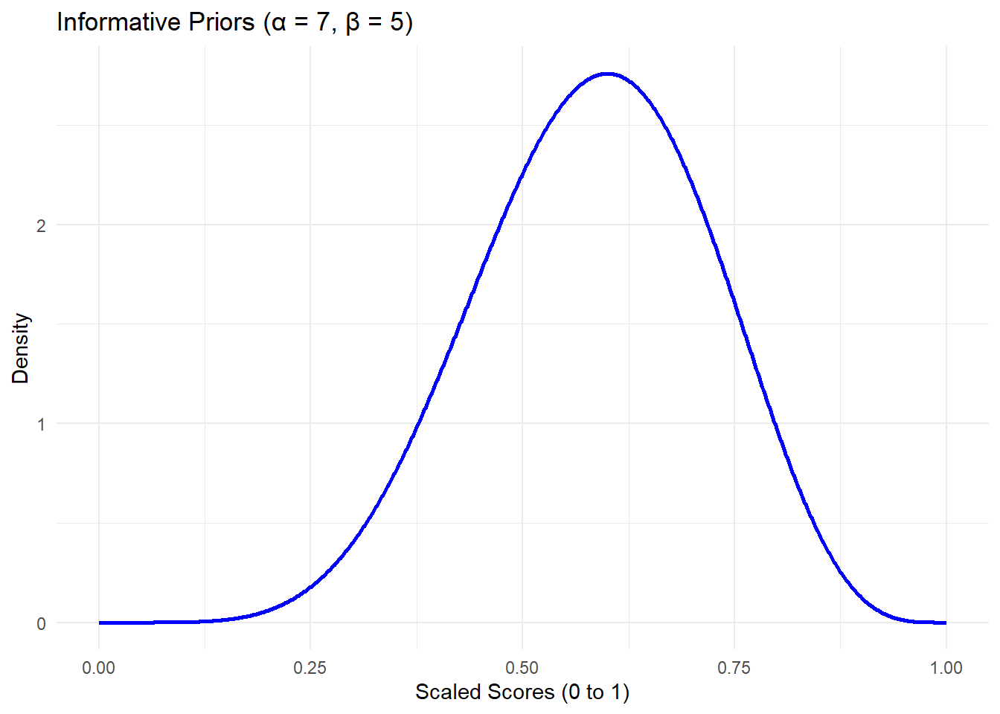

Plots the data to show how stimulus type and the level of inner voice affect reaction times
aes() defines the aesthetics for the plot:
x = type maps the stimulus type to the x-axis
y = rt maps the reaction time (ms) to the y-axis
fill = high_low_verbal maps the inner voice level (high or low) to the fill colour of the boxes.
plot <-ggplot(rhyming_data, aes(x = type, y = rt, fill = high_low_verbal)) +geom_boxplot() +# Creates boxplots for each combination of `type` and `high_low_verbal`scale_fill_manual(values =c("high_verbal"="skyblue", "low_verbal"="salmon")) +# Fills boxplot with custom colorslabs(title ="Effect of Stimulus Type and Inner Voice Level on Reaction Times",x ="Stimulus Type",y ="Reaction Time (ms)",fill ="Inner Voice Level") +theme_minimal() # Applies a minimal theme to the plot for a clean look
Displays the plot
print(plot)

2.3
An appropriate model structure for this analysis would be a linear mixed effects model (LMM)
This is because LMM can account for fixed effects (type, high_low_verbal) and random effects (variability between participants)
LMM are good for continuous outcome variables, such as reaction time
The model structure will include:
Fixed Effects:
type: to test the effect of stimulus type on reaction times
high_low_verbal: to test the effect of inner voice level on reaction times
Interaction between type and high_low_verbal: to test whether the effect of stimulus type depends on inner voice level
Random Effects:
Random intercept for worker_id: to account for individual differences in baseline reaction times
Fits the linear mixed-effects model
model <-lmer(rt ~ type * high_low_verbal + (1| worker_id), data = rhyming_data)
Displays the model summary
summary(model)
Linear mixed model fit by REML ['lmerMod']
Formula: rt ~ type * high_low_verbal + (1 | worker_id)
Data: rhyming_data
REML criterion at convergence: 77153.2
Scaled residuals:
Min 1Q Median 3Q Max
-2.4962 -0.6590 -0.2306 0.4046 4.9186
Random effects:
Groups Name Variance Std.Dev.
worker_id (Intercept) 87738 296.2
Residual 442321 665.1
Number of obs: 4861, groups: worker_id, 93
Fixed effects:
Estimate Std. Error t value
(Intercept) 1855.93 48.40 38.342
typeNR 75.59 31.69 2.385
typeortho -136.05 33.30 -4.085
high_low_verballow_verbal 122.84 68.87 1.784
typeNR:high_low_verballow_verbal -23.35 45.17 -0.517
typeortho:high_low_verballow_verbal 19.55 47.42 0.412
Correlation of Fixed Effects:
(Intr) typeNR typrth hgh___ tNR:__
typeNR -0.310
typeortho -0.295 0.451
hgh_lw_vrb_ -0.703 0.218 0.208
typNR:hg___ 0.218 -0.702 -0.317 -0.311
typrth:h___ 0.207 -0.317 -0.702 -0.297 0.452
Analysis of Variance Table
npar Sum Sq Mean Sq F value
type 2 27868582 13934291 31.5027
high_low_verbal 1 1551284 1551284 3.5071
type:high_low_verbal 2 350022 175011 0.3957
Summary of Findings
Effect of Inner Speech Level:
Participants with a low inner speech level (high_low_verballow_verbal) had reaction times that were 122.84 ms slower on average (SE = 68.87, t = 1.784) compared to those with a high inner speech level. This effect is marginally significant (F = 3.5071, p = 0.06), suggesting that inner speech level may have a small influence on reaction times.
Effect of Rhyme Type:
Orthographic rhymes (typeortho) led to 136.05 ms faster reaction times on average (SE = 33.30, t = -4.085) compared to non-orthographic rhymes.
Non-rhyming pairs (typeNR) resulted in 75.59 ms slower reaction times (SE = 31.69, t = 2.385) compared to non-orthographic rhymes.
The overall effect of rhyme type is highly significant (F = 31.5027, p < 0.001), indicating that the type of rhyme strongly influences reaction times.
Interaction Between Inner Speech and Rhyme Type:
The interaction terms (typeNR:high_low_verballow_verbal and typeortho:high_low_verballow_verbal) were not statistically significant (t = -0.517 and t = 0.412, respectively).
The ANOVA results confirm that the interaction is not significant (F = 0.3957, p > 0.05), meaning the effect of rhyme type on reaction times does not depend on inner speech level.
Conclusion:
Your level of inner speech may slightly affect how quickly you judge whether words rhyme, with lower inner speech levels potentially slowing you down by 122.84 ms on average (though this effect is only marginally significant).
The type of rhyme strongly influences reaction times:
Orthographic rhymes speed up judgments by 136.05 ms on average.
Non-rhyming pairs slow down judgments by 75.59 ms on average.
However, the influence of rhyme type does not interact with inner speech level, meaning that people with high or low inner speech are affected similarly by the type of rhyme.
This suggests that while inner speech might play a small role in processing speed, the type of rhyme is a more consistent and significant factor in determining how quickly people make rhyming judgments.
3.1
The Beta distribution takes two parameters: α (alpha) and β (beta)
To use the Beta distribution, the dependent variable (student marks) must be re-scaled to the interval [0,1]
This approach improves the model by better reflecting the bounded nature of the data, as marks cannot exceed 100% or go below 0%
3.2
Creates a sequence of values between 0 and 1 (representing scaled marks)
x <-seq(0, 1, length.out =1000)
Defines parameters for the Beta distributionI have chosen alpha = 7 and beta = 5, which gives a distribution centered roughly around 0.6 (60%), which looks correct
alpha <-7beta <-5
Calculates the density of the Beta distribution for the sequence of values
y <-dbeta(x, alpha, beta)
Creates a data frame for plotting
beta_data <-data.frame(x = x, y = y)
Plots the Beta distribution
ggplot(beta_data, aes(x = x, y = y)) +geom_line(color ="blue", linewidth =1) +labs(title ="Beta Distribution (α = 7, β = 5)",x ="Scaled Marks (0 to 1)",y ="Density") +theme_minimal()

3
Informative priors
Define a sequence of values for the Beta distribution
x <-seq(0, 1, length.out =1000)
Parameters for the Beta distribution (α = 7, β = 5). These values reflect the belief that marks in PS947 are clustered around 60%, with moderate variability.
beta_info_data <-data.frame(x = x, density = beta_density_info, type ="Informative")
Plots the Beta distribution
ggplot(beta_info_data, aes(x = x, y = density)) +geom_line(color ="blue", linewidth =1) +labs(title ="Informative Priors (α = 7, β = 5)", x ="Scaled Scores (0 to 1)", y ="Density") +theme_minimal()

Weakly informative priors
Set seed for reproducibility
set.seed(123)
Number of samples
n_samples <-1000
Samples from weakly-informative Gamma priors for α and βGamma(shape = 2, rate = 1) for both α and β create a broad prior that allows a wide range of values for α and β.The mean of the Gamma distribution is 2, while the variance is also 2